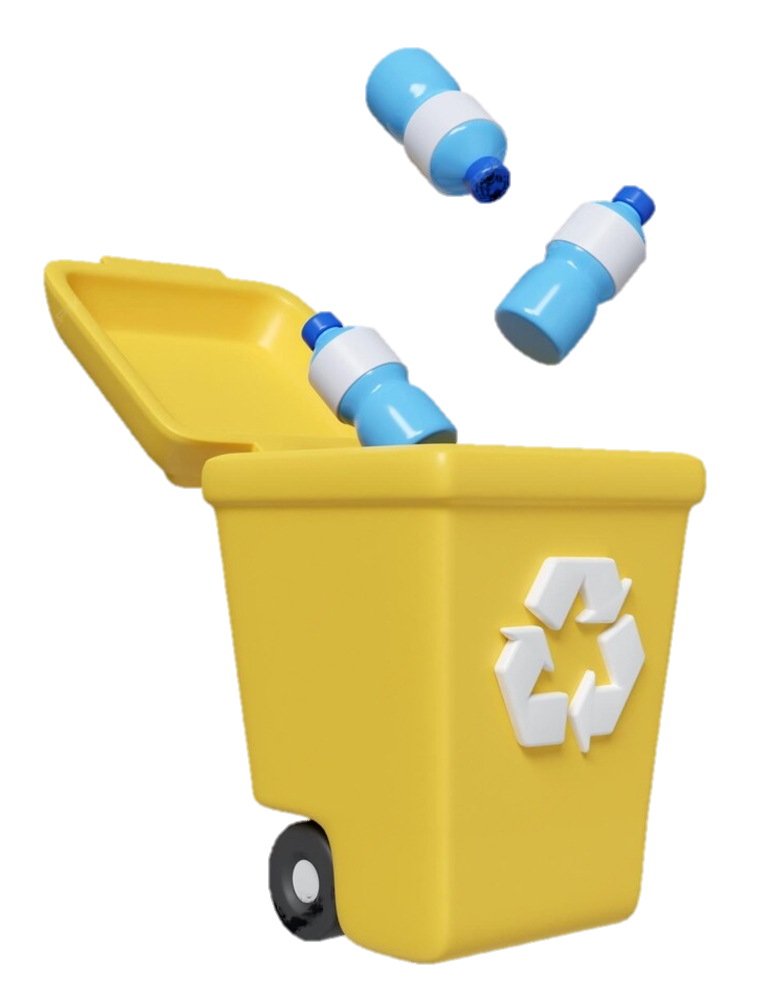
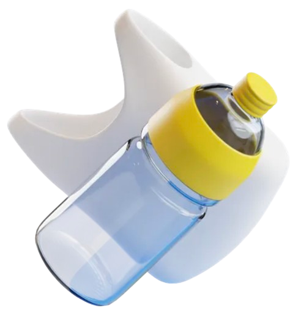

Le problème mondial des déchets plastiques est devenu une préoccupation majeure pour les gouvernements, les entreprises et les citoyens. En 2023, la production de déchets plastiques a atteint des niveaux alarmants, affectant l’environnement et la santé publique. La gestion de ces déchets varie selon les pays, en fonction de leurs infrastructures, de leur économie et de leur sensibilisation aux enjeux écologiques.
Dans ce projet, nous explorerons des données sur la production de déchets plastiques en 2023, incluant la quantité produite par pays, les sources de pollution, les taux de recyclage, la production par habitant, et les risques pour les zones côtières.
À travers des graphiques variés tels que des cartes géographiques, des graphiques en secteurs (pie charts) et d'autres formes de visualisation, ce projet mettra en lumière les tendances mondiales et régionales de la gestion des déchets plastiques.

Dans le cadre de notre analyse des déchets plastiques mondiaux en 2023, nous avons examiné les principales industries responsables de la production de plastique. À travers un graphique en camembert, nous avons pu visualiser de manière claire et concise les secteurs les plus grands contributeurs à la pollution plastique. Les résultats montrent que les emballages industriels, les emballages pour les consommateurs, et les biens de consommation sont les trois principales sources de plastique dans le monde.
Le graphique en camembert est particulièrement adapté pour représenter ce type de données, car il permet de visualiser de façon intuitive la proportion de chaque industrie dans la production totale de plastique. En utilisant un camembert, nous pouvons rapidement identifier quelles industries sont les plus responsables de la pollution plastique et observer leurs parts relatives.